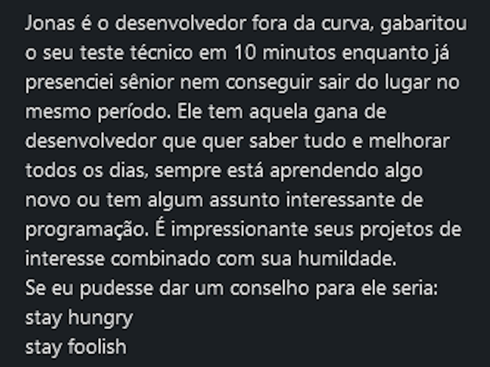
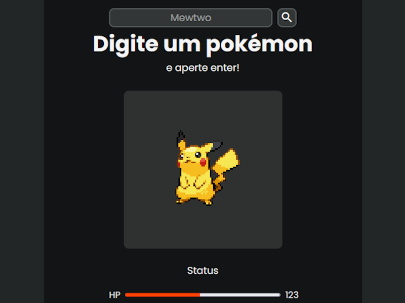
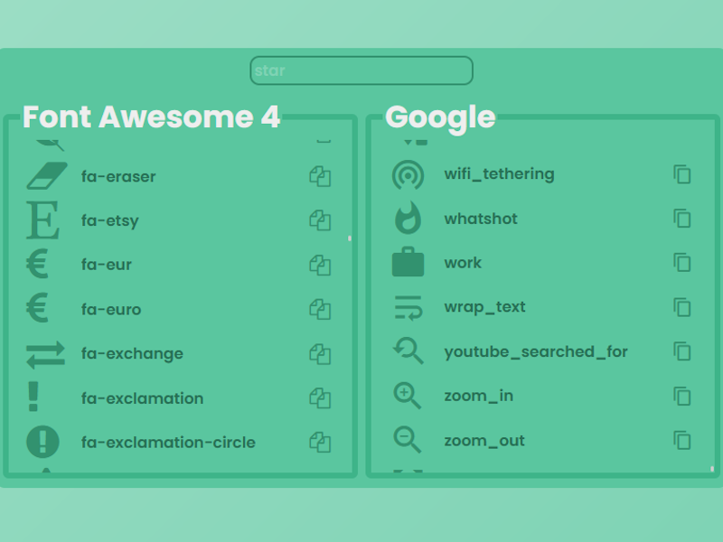

Portfólio
Wine Suite - CRM

Fiz parte do time de desenvolvimento do CRM de vinícolas da Wine Suite por quase dois anos. Responsável pela correção de bugs e adição de features. Fui um dos desenvolvedores mais ativos e mais envolvidos no projeto.
Recomendações
Por causa da minha paixão pela programação, fiz amizade com meus colegas e me destaquei graças ao meu entusiasmo e curiosidade sobre as tecnologias usadas. Recebi diversos elogios e recomendações no meu perfil do LinkedIn.
Pokédex
Front-end minimalista que consome a PokéAPI. Tem um visual minimalista focado em pesquisar Pokémons rapidamente. A página também possui funcionalidades de histórico, favoritos e auto-complete.
Quick HTML Icons
Site feito para desenvolvedores web que precisam de icones para suas páginas HTML de forma rápida e gratuita. Contém mais de 1000 ícones de duas fontes diferentes